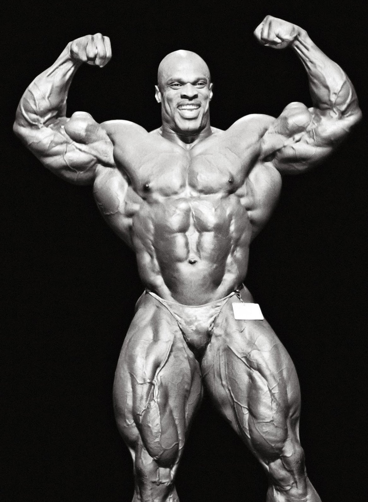
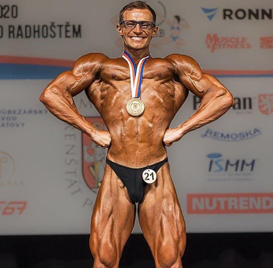
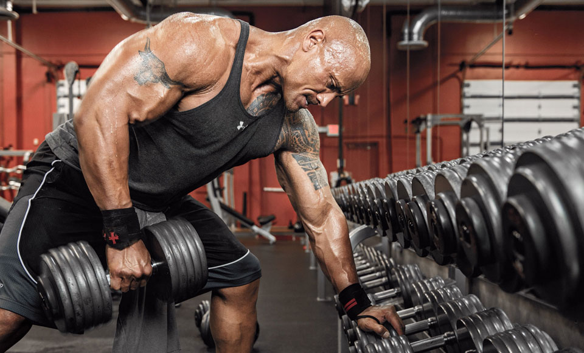

Historie a současnost
Historie
Za zakladatele kulturistiky je považován Eugen Sandow (1867–1925), který začíná s vědeckým zkoumáním silových cvičení a v Evropě a v Americe začínají vznikat různé cvičební systémy a školy. Výraznější rozvoj zaznamenalo cvičení s činkami po 1. světové válce. První oficiální soutěž o titul nejlépe harmonicky rozvinutého sportovce se konala v roce 1939 v USA.
Roku 1946 byla založena mezinárodní federace kulturistiky IFBB (International Federation of Body Builders některé zdroje uvádí zkratku International Federation of Bodybuilding & Fitness), a to bratry Joem a Benem Weiderovými. Za oficiální sport se kulturistika začala uznávat až v roce 1968, přestože již roku 1946 vznikla federace IFBB, která již má v této době 186 členských zemí. V 60. letech 20. století také přichází kulturistika do tehdejšího Československa. Za formální počátek kulturistiky je považován rok 1964, kdy vznikla komise ke kategorii vzpírání. Zanedlouho se však organizace osamostatnila a vznikly 3 nové směry: silový trojboj, kondiční (rekreační) kulturistika a sportovní kulturistika. Silový trojboj se po určité době zcela oddělil. S postupným rozvojem kulturistiky docházelo také k rozvoji fitcenter, která byla nejčastěji zakládána lidmi z řad kulturistů. Nevýhodou cvičení v této době bylo, že až po roce 1989 začala v Československu vznikat fitness centra, která byla určena pro běžnou populaci. Před tímto rokem fitness centra prakticky neexistovala. Zpočátku se však skládala pouze z činek a jednoduchých strojů, což také nepatří zrovna k výhodám. Další značnou nevýhodou bylo, že instruktoři, kteří radili a pomáhali se cvičením, nebyli tehdy řádně proškoleni a vznikalo zde riziko zdravotních problémů.

Ronnie Coleman
Současnost
V současné době má cvičení ve fitness centrech a sportovní kulturistika mnohem vyšší úroveň než v minulosti. Nejenže dnešní posilovny nebo fitcentra disponují moderním vybavením, ale jsou i ve většině případech větší a prostornější než dřív. Občas se můžeme setkat s fitness centry s wellness zónami pro možnou relaxaci. Můžeme si také zaplatit osobního trenéra, který již musí absolvovat kurz s akreditací MŠMT ČR (Ministerstvo školství, mládeže a tělovýchovy České republiky), pokud tuto práci chce vykonávat jako profesi v určitém fitcentru. Tímto má značné vzdělání, kterým se zmenšuje riziko možných zdravotních problémům a komplikací. Jistým vývojem prošla i kulturistika, u které je dnes mnohem větší konkurence než dříve a také je dostupné mnoho látek, jak povolených, tak i zakázaných, které především podporují růst svalů. Z čehož vyplývá, že kulturisti dnes jsou mnohem více svalovití či lépe vyrýsovaní než kulturisti dřív.
Aleš Lamka
Dwayne "The Rock" Johnson
